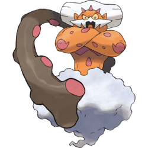

Generation 5
Generation 5 is the Fifth series of games to be released by Gamefreak in the Pokemon franchise. Unlike Generation 4 this generation does not feature a remake of any previous generation but came out with a remake off itself two years after release with a more complex plot and more revised legendary pokemon. Four games were released this generation Pokemon White, Pokemon Black, Pokemon White 2 and Pokemon Black 2. Generation 5 released with no real correlation to the previous games as Gamefreak were going for a new look and putting a hard reset on all the established lore for these games. Generation 5 released in mid 2010 in Japan and early March of 2011 in North America, March 10th of 2011 in Australia, April 21st in South Korea and March 4th in Europe. Black and white 2 released in late June in Japan of 2012, in the October off 2012 in Europe, North America and Australia and finally in November of 2012 in South Korea making it the first game in the Pokemon series to release in all regions were pokemon is playable in the same year. All of these releases were on the Nintendo DS and were fully liscensed by Nintendo. Team Plasma led by Ghetis in Black and White and by Colress in Black and White 2 is the evil team of this generation. The Male playable characters of this generation are Hilbert in Black and White and Nate in Black and White 2, the female playable characters of this generation are Hilda from Black and White and Rosa of Black and White 2. The starter Pokemon of this generation are Tepig the Fire type, Snivy the Grass type and Oshawott the Water type.
Gameplay Mechanics
Generation 5 was meant to be a technical masterpeice from its predecessors, with this came a slue of new gameplay mechanics and changes.
- 156 new pokemon none of which were evolutions of previous Generations
- 92 new Moves
- 41 New abilities and allowing many older pokemon from Generation 3 and Generation 4 to have new abilities that were believed to better fit them
- The Introduction of Dark grass where double encounters with Pokemon can occur
- The Introduction of Seasons which alternate each month
- The Pokemart is now combined with the pokecentre
- One New variant of pokeball
- A framerate increase from 30 to 60 whilst in battle
Region
The Unova region was made for Generation 5 and is based of New York in the United Sates of America. The region is split into three by two large rives with a dense urban region in the middle pillar at the shoreside the represent the very coastal but urbanly dense New York City. It also has some Rural areas which are based of small rural towns in New York State and are mostly in the North Connecting the three Pillars via bridges from town to town. Unova is not near any other regions from previous generations further showing that Gamefreak believed that seperating this Generation from the previous generations would be better for the game and franchise as a whole. A large amount of Industrial Complexes is present to further link the region to New York.
Legendaries
Generation 5 has 12 legendary pokemon with the Swords of Justice being a trio of legendary pokemon in Cobalion, Terrakion and Virizion. The Forces of Nature another trio in Tornadus, Thundrus and Landorus and the Tao Trio off Reshiram, Zekrom and Kyurem. The Final Three Legendary Pokemon are keldeo, Genesect and Meloetta Coballion is found in the Mistralton cave 2F, Terrakion will not appear until Coballion is caught, Terrakion will appear in a cave East of the exit to Victory Road, in Pinwheel forest there is a log that takes you to Rumination field, this is where you can find Virizion. Tornadus and Thundrus are roaming Legendaries that will appear all over Unova after receving the Legendary badge Tornadus is only catchable in pokemon white and white 2 and Thudrus is only available in black and black 2, Landorus is only catchable with both Tornadus and Thundrus, once you have both head to the Abundant Shrine. After defeating the Elite Four head to the throne room you will find your Zekrom (White Version) or Reshiram (Black Version) to catch. To get Kyurem you need Zekrom, Reshiram and some DNA splicers, you will lose both Zekrom and Reshiram and in its place you will receive a Kyurem. The Rest of the Legendaries are not available for capture in this Generation.
